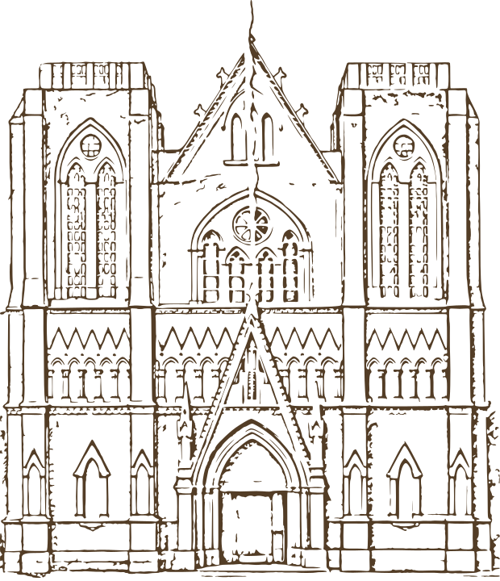
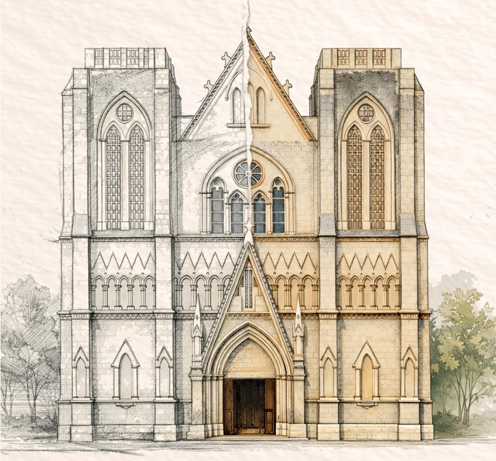
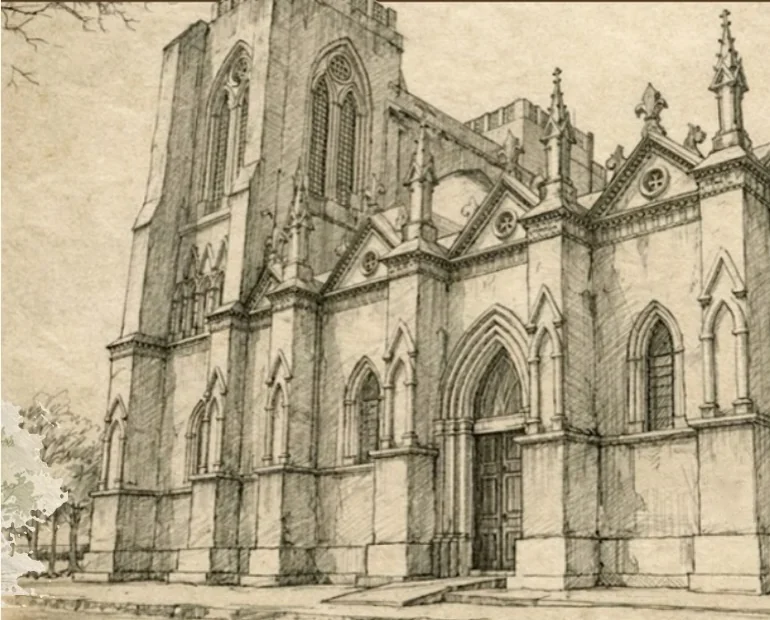

Doações da comunidade
Contribuições por PIX ou em dinheiro, de qualquer valor. É a forma mais simples de participar.
Doar agora →Projeto de Restauração e Climatização
de Cáceres
Preservar o passado é construir o futuro. A restauração da nossa Catedral é um compromisso com a nossa história, nossa cultura e nossa fé.



Objetivo geral
Restaurar e valorizar a Catedral São Luiz de Cáceres, preservando sua importância histórica, cultural e religiosa.
Com a sua contribuição será possível restaurar a estrutura, implantar a climatização, criar o Museu de Arte Sacra e tornar o espaço mais acessível para todos. Cada gesto conta.
Com sua contribuição
Recuperação da estrutura, fachadas e elementos arquitetônicos do nosso patrimônio.
Mais conforto para as celebrações, mesmo no calor intenso de Cáceres.
Um espaço para preservar e apresentar o acervo e a memória da nossa Igreja.
Um lugar de encontro, formação e cultura aberto à comunidade.
Melhorias para que todos possam chegar, entrar e participar.
Participe
Qualquer valor faz diferença. Leva menos de um minuto.
Chave PIX (E-mail)
catedralcaceres70@gmail.com
Antes de confirmar, confira o nome do recebedor no app do banco:
DIOCESE DE SAO LUIZ DE CACERES – Restauração Catedral
Entregue na secretaria paroquial.
Seg a Sex: 7h30 às 11h | 13h às 17h · Sáb: 7h30 às 11h
📞 (65) 3223-4443Escolha a melhor forma
Contribuições por PIX ou em dinheiro, de qualquer valor. É a forma mais simples de participar.
Doar agora →Empresas podem destinar até 4% do IR devido e pessoas físicas até 6%, com 100% de dedução.
Quero saber como →Patrocinadores de valores especiais terão placa de agradecimento com o nome da empresa no Museu de Arte Sacra da Catedral.
Seja um benfeitor →Gratidão
Empresas e famílias que abraçaram este projeto de forma expressiva.
Sua empresa pode ser a primeira a deixar o nome gravado na história da Catedral.
Quero ser benfeitorMural de gratidão
Em prol da restauração
Fazer minha doação“Deus ama quem dá com alegria.”
2 Coríntios 9,7
Transparência
No app do banco, antes de confirmar, aparece o nome do recebedor: DIOCESE DE SAO LUIZ DE CACERES. Se aparecer outro nome, não confirme. Esta página é divulgada pelos canais oficiais da Paróquia São Luiz; confira sempre se o endereço no navegador é o endereço oficial.
Sim. Toda contribuição, de qualquer tamanho, ajuda a preservar a nossa Catedral.
Copiando a chave, você digita o valor no app do banco. O Copia e Cola já leva o valor escolhido aqui na página: basta colar no app do banco em “PIX Copia e Cola” e confirmar.
Não. A página não pede nem armazena nenhum dado pessoal. O pagamento acontece só no app do seu banco.
Fale com a secretaria paroquial. Benfeitores de valores especiais recebem placa de agradecimento no Museu de Arte Sacra e podem apoiar também via Lei Rouanet.
Pessoas e empresas podem direcionar parte do Imposto de Renda devido ao projeto (empresas até 4% e pessoas físicas até 6%). Procure a secretaria para receber as orientações e os dados do projeto aprovado, e consulte seu contador.